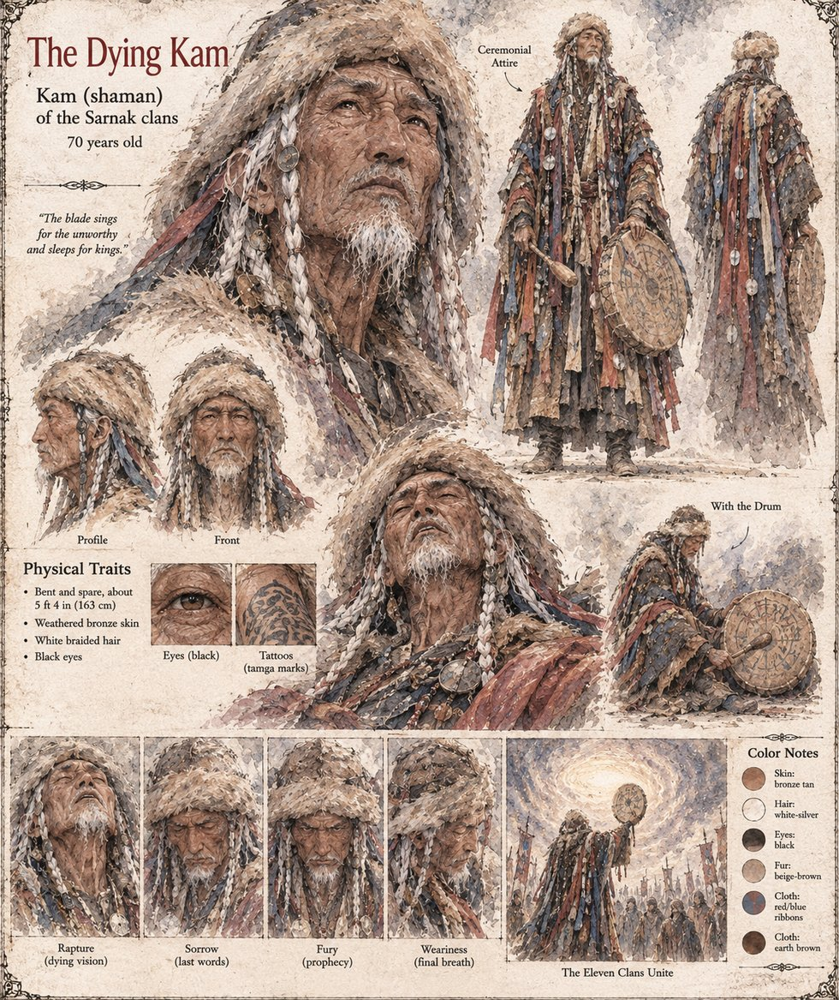

The Dying Kam
Kam (shaman) of the Sarnak clans · the seer behind the first siege · 70 years old
The shaman of the Sarnak clans, unnamed in the manuscript, whose final vision unites eleven quarrelling clans under Yorbulan: that a blade which sang for the unworthy and slept for kings would, in the hand of whichever khagan proved humble enough to wake it, sing the whole grass into one nation for a thousand years. Yorbulan believes it with the unshakeable clarity of a man who has already done one impossible thing. It carries him across four hundred miles of hostile ground to the first siege of Ardenwake, where he dies of a winter fever outside gates he never breaches, still certain that one more week would have been enough. The manuscript gives the Kam no appearance and no other line.
The sheet gives his age as 70 and draws him bent and spare, about 5'4", with weathered bronze skin, white braids woven with horsehair, black eyes, a sparse white beard and tamga marks tattooed on both forearms, in a felt coat hung with ribbons and small mirrors under a fox-fur cap, with a drum and beater. Its expressions are rapture (dying vision), sorrow (last words), fury (prophecy) and weariness (final breath), and its last panel is the eleven clans uniting. The pull-quote is the sheet's short form of the vision. The sheet's culture line reads Oghuz Turkic (Sarnak Horde); the manuscript names no culture.
“The blade sings for the unworthy and sleeps for kings.”